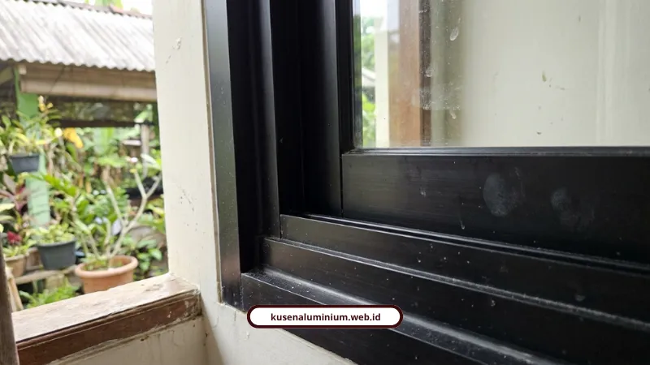

Harga Kusen Aluminium per Meter Malang 2026

📌 Ringkasan Inti
Rincian harga kusen aluminium per meter di Malang 2026, mulai dari pilihan paket jasa pasang jadi, komparasi merek YKK AP vs Alexindo, hingga standar HSPK Kabupaten Malang:
- Paket jasa pasang plus bahan di Malang Raya: kusen 3 inch Rp80.000/meter dan kusen 4 inch Rp95.000/meter lari.
- Benchmark bahan per meter lari: Alexindo Rp150.000–Rp250.000, Dacon Rp130.000–Rp230.000, YKK AP Rp250.000–Rp350.000, dan Inkalum Rp250.000–Rp450.000.
- Kusen aluminium lebih hemat 20%–50% dibanding kayu solid dalam jangka panjang serta bebas risiko rayap dan lapuk di iklim lembap Malang.
- Struktur harga sejalan dengan Peraturan Bupati Malang No. 10 Tahun 2025 tentang Standar Harga Satuan Pekerjaan Konstruksi (HSPK 2026).
- Spesifikasi unggul: profil SNI 1,1–1,35 mm, sudut miter 45° presisi 0,5 mm, karet EPDM ganda, survei gratis, dan sertifikat garansi resmi.
- Berapa Sebenarnya Harga Kusen Aluminium per Meter di Malang?
- Kenapa Harga YKK AP Lebih Mahal dari Alexindo?
- Aluminium vs Kayu, Mana yang Lebih Murah di 2026?
- Apakah Harga Ini Sudah Sesuai Acuan Resmi Pemerintah?
- Spesifikasi Apa yang Bikin Harga Kami Sepadan?
- Bagaimana Cara Dapat Estimasi Harga Tanpa Nunggu Survei?
- Kata Klien yang Sudah Pakai Jasa Kami
- Berapa Anggaran Aman untuk Kusen Aluminium?
- FAQ Seputar Harga Kusen Aluminium
Harga kusen aluminium per meter di Malang 2026 berkisar Rp80.000 sampai Rp350.000, tergantung merek dan ukuran profil. Saya akan bongkar rinciannya biar RAB rumah Anda ngga meleset.
Saya sudah bolak-balik ngobrol sama tukang, aplikator, sampai baca dokumen resmi Pemkab soal harga satuan bangunan. Jujur saja, banyak orang kaget pas tahu rentang harganya lumayan lebar. Tapi itu ada alasannya, dan saya jelaskan pelan-pelan di bawah ini.
Berapa Sebenarnya Harga Kusen Aluminium per Meter di Malang?
Jawaban singkatnya: tergantung mau pakai jasa pasang jadi atau beli bahan mentah per batang. Dua-duanya punya angka yang beda jauh.
Kalau Anda ambil paket jasa pasang plus bahan di kawasan Malang Raya, kisarannya begini:
- Kusen aluminium 3 inch: Rp80.000 / meter (bahan + jasa)
- Kusen aluminium 4 inch: Rp95.000 / meter (bahan + jasa)
- Pemasangan kaca mati: Rp200.000 / meter
- Daun pintu aluminium: Rp1.500.000 / daun
- Daun jendela aluminium: Rp650.000 / daun
Kalau Anda tertarik motif serat kayu, ada opsi kusen 3 inch merk INFINITO tebal 1 mm dengan motif coklat serat kayu jati, harganya Rp220.000 per meter lari, sudah termasuk pasang untuk wilayah Malang Raya.

Kenapa Harga YKK AP Lebih Mahal dari Alexindo?
YKK AP lebih mahal karena ketebalan profil dan sistem sealing-nya lebih rapat, jadi lebih tahan bocor dan lebih senyap. Alexindo tetap layak dipakai kalau budget jadi prioritas utama.
Ini benchmark harga bahan per meter lari secara umum, di luar biaya pasang:
- Alexindo: Rp150.000 - Rp250.000 / meter
- Dacon: Rp130.000 - Rp230.000 / meter
- YKK AP: Rp250.000 - Rp350.000 / meter
- Inkalum: Rp250.000 - Rp450.000 / meter
Kalau dihitung per batang standar, harganya begini:
- Alexindo: 3 inch Rp55.000-Rp75.000, 4 inch Rp75.000-Rp85.000
- Superex: 3 inch Rp90.000-Rp100.000, 4 inch Rp100.000-Rp110.000
- YKK AP: 3 inch Rp100.000-Rp120.000, 4 inch Rp120.000-Rp150.000
Buat yang mau pegang rumus hitungnya sendiri sebelum minta penawaran, kami sudah bahas tuntas di artikel cara menghitung kebutuhan kusen aluminium untuk rumah minimalis, lengkap dengan contoh kasus RAB kamar tidur.
Simulasi RAB Kusen Aluminium Presisi Malang Raya
Dapatkan estimasi biaya transparan dan survei lokasi gratis di Kota Malang, Kabupaten Malang, dan Kota Batu. Dikerjakan presisi miter 45° dengan garansi resmi tertulis.
Aluminium vs Kayu, Mana yang Lebih Murah di 2026?
Aluminium lebih murah dalam jangka panjang karena hampir tidak butuh biaya perawatan tahunan. Kayu memang murah di depan, tapi biaya susulannya sering bikin kaget.
Kusen kayu Kamper Samarinda Oven ada di kisaran Rp150.000-Rp250.000 per meter lari, itu pun belum termasuk finishing pelitur dan upah tukang. Sementara kusen aluminium sudah all-in pasang di kisaran Rp100.000-Rp180.000 per meter lari.
Hitung-hitungan kasarnya:
- Aluminium hemat 20%-30% dibanding kayu kualitas menengah
- Aluminium hemat sampai 50% dibanding kayu Jati
Belum lagi soal ketahanan. Material aluminium memang tidak lapuk dan tidak diserang rayap, sesuatu yang jadi masalah klasik kusen kayu di iklim Malang yang lembap.
Kalau Anda penasaran kenapa material ini cocok untuk cuaca lokal, saya sudah tulis lebih detail di material kusen aluminium anti karat yang cocok untuk iklim Malang.
Apakah Harga Ini Sudah Sesuai Acuan Resmi Pemerintah?
Sudah, harga pasaran ini sejalan dengan semangat Peraturan Bupati Malang. Pemerintah Kabupaten Malang sendiri sudah merilis Perbup No. 10 Tahun 2025 tentang Standar Harga Satuan untuk tahun anggaran 2026.
Dokumen ini jadi dasar penetapan Harga Satuan Pekerjaan Konstruksi (HSPK) 2026 yang wajib diacu kontraktor lokal, baik untuk proyek pemerintah maupun swasta di Kabupaten Malang. Jadi kalau ada penawaran yang jauh di bawah pasaran, itu patut dicurigai kualitas materialnya.
Spesifikasi Apa yang Bikin Harga Kami Sepadan?
Kami tidak main di harga termurah, tapi di presisi dan ketahanan jangka panjang. Berikut standar yang kami pegang di setiap pengerjaan:
- Profil murni SNI dari YKK AP, Alexindo, dan Forta, ketebalan 1,1 mm sampai 1,35 mm
- Sambungan miter 45 derajat dengan toleransi presisi hingga 0,5 mm
- Karet weather-seal EPDM ganda di sekeliling frame, anti bocor sekaligus meredam bising
- Aksesoris heavy-duty dari stainless steel 304 anti-karat
- Survei lokasi dan pengukuran ulang gratis untuk Kota Malang, Kabupaten Malang, dan Kota Batu
- Sertifikat garansi resmi, termasuk jaminan anti-kebocoran sealant dan garansi fungsi kuncian
Kami melayani Kota Malang, Kabupaten Malang, dan Kota Batu, dengan pengalaman lebih dari 10 tahun sebagai aplikator dan rekam jejak lebih dari 500 bukaan terpasang di Jawa Timur.
"Presisi sambungan sudut miter 45 derajat dan kerapatan weather-seal karet EPDM adalah pembeda utama antara kusen yang tahan puluhan tahun dengan kusen yang bocor saat musim hujan tiba di Malang."
Bagaimana Cara Dapat Estimasi Harga Tanpa Nunggu Survei?
Anda bisa hitung sendiri lewat kalkulator online kami dulu sebelum janjian survei. Tinggal masukkan ukuran bukaan, pilih merek dan warna, hasil estimasi RAB langsung keluar.
Kami tulis panduan langkah demi langkahnya secara lengkap di cara menggunakan simulasi harga instan kusen aluminium di website kami, biar Anda ngga bolak-balik nanya harga ke banyak orang dulu.
Kata Klien yang Sudah Pakai Jasa Kami
Rizky Hermawan, Manager PT Maju Bersama, bilang begini:
"Proyek kantor kami selesai dengan kualitas luar biasa. Transparansi RAB dan laporan progres berkala membuat kami tenang selama proses pembangunan berlangsung."
Maya Sari, pemilik rumah di Kota Batu, juga punya pengalaman serupa:
"Renovasi rumah lama kami menjadi tampak modern seperti rumah baru. Tim sangat profesional, cepat, dan harga kompetitif. Sudah 3 tahun dan kualitasnya tetap terjaga."
Berapa Anggaran Aman untuk Kusen Aluminium?
Kalau rumah Anda tipe 36-70 dengan beberapa pintu dan jendela standar, siapkan kisaran Rp2 juta sampai Rp6 juta khusus untuk kusen, tergantung merek yang dipilih. Angka ini di luar kaca dan aksesoris tambahan.
Yang penting, jangan cuma lihat harga per meter tanpa cek ketebalan profil dan sistem seal-nya. Harga murah tapi bocor pas musim hujan justru bikin Anda keluar biaya dua kali.
Kalau Anda mau angka yang lebih presisi sesuai ukuran rumah sendiri, langsung saja coba estimator harga instan kami. Atau kalau masih pengen lihat dulu contoh hasil kerja kami di lapangan, mampir ke galeri proyek kami.
FAQ Seputar Harga Kusen Aluminium
Belum. Harga per meter yang disebutkan di atas khusus untuk rangka kusennya saja. Kaca dihitung terpisah per meter persegi, tergantung ketebalan dan jenisnya, misalnya kaca mati atau kaca tempered.
Selisihnya biasanya kecil, karena bahan baku aluminium seperti YKK AP dan Alexindo mengikuti harga distribusi nasional. Yang membedakan biasanya cuma ongkos jasa pasang di masing-masing daerah.
Tergantung jumlah bukaan, tapi untuk rumah tipe menengah biasanya selesai dalam hitungan hari setelah survei dan pengukuran ulang dilakukan.